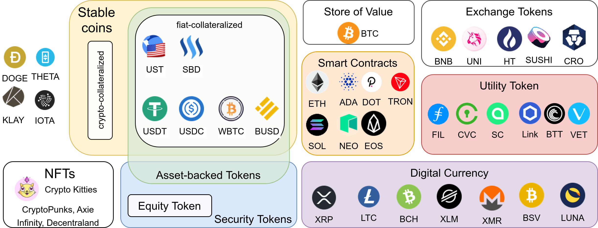
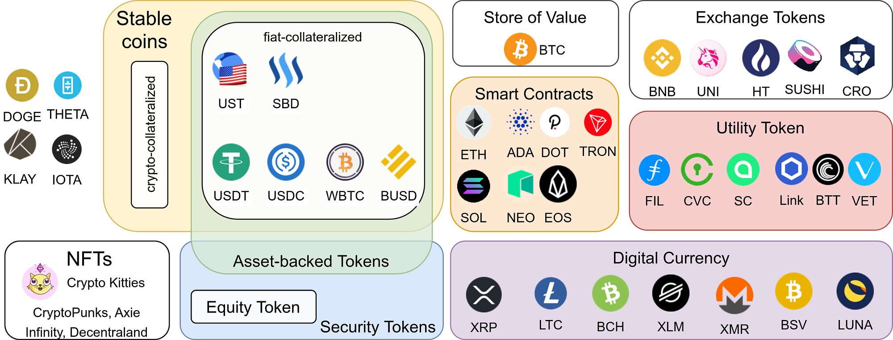

{kind=link}

{kind=link}

The crypto ecosystem grew rapidly in the past years — so rapidly that it’s hard for outsiders to even understand the various use cases in that space. After reading this article, you should have some mental models to compare the latest blockchain projects. Let’s go!
Coins vs Tokens: A technical distinction
Coins are assets on their native blockchain, whereas tokens are assets foreign to the blockchain they live on. Examples of coins are Bitcoin on the Bitcoin blockchain and Ether on the Ethereum blockchain. Examples of tokens are Tether as a second-layer token on multiple blockchains; Uniswap’s “UNI” token and Chainlink’s “LINK” token use the Ethereum blockchain. Building tokens on top of Ethereum is super popular; most are so-called ERC20 tokens.
Please note that in some conversations, articles, and videos the two terms are used interchangeably.
While the distinction between coins and tokens is technical, we can group tokens and coins by their intended usage. While there are a lot of use cases, two big distinct groups are security tokens and utility tokens.
Security Tokens
A “security” is a tradable financial asset. The Howey-Test helps to tell if an asset is a security:
A contract, transaction or scheme whereby a person invests his money in a common enterprise and is led to expect profits solely from the efforts of the promoter or a third party, [is a security under the US Securities Act]
This is often simplified to:
- Was there an investment of money?
- Was the money invested in a common enterprise?
- Was there an expectation of profit?
- Are the profits solely from the efforts of the promoter or a third party?
Examples of security tokens can be found by looking for security token offerings (STOs): icoholder.com, coincodex.com. SolarStake and L’Osteria are two recent examples I found there.
Bitcoin is not a security token, because the money is not invested in a common enterprise.
Equity Tokens
Equity tokens are a form of security tokens that allow the holders to have some ownership rights. Although I found this being mentioned a couple of times, I haven’t seen a concrete public example. If you know one, please share it!
Asset-backed tokens
The tokenization of assets makes them tradable. Instead of trading the asset itself, you trade the token. It is similar to paper money: Instead of trading gold, you trade paper which represents a certain amount of gold. The issue with asset-backed tokens is the lack of oversight. Of course, the issuer of the token can claim that the token is backed by anything. Without actual checks, this claim isn’t worth anything.
Assets that can be tokenized are:
- Precious metals: PAXG and DGX are backed by gold
- Company shares: Instead of trading company shares via well-known exchanges, they could be traded as crypto tokens. I couldn’t find a single example where this is actually done.
- Other commodities: The Petro (XPD) was claimed to be backed by oil and mineral reserves. I haven’t seen other examples.
- Real estate: There are multiple tokens around real estate and several countries which look into representing real estate as a crypto token. The IHT Coin seems to go in this direction, but it also gives the impression that it’s not ready. The concept is nice, but there is no ready-to-use product as far as I can tell.
Utility Tokens
Security tokens are traded with the expectation to get direct profit from them. In contrast, utility tokens are traded with the expectation to get some utility. For example, a FIL (Filecoin) token / SC (SIA) can be used to store a file. The CVC (Civic) token can be used to verify a user's identity. Or let’s rather say that is the idea. I haven’t seen clear instructions on how to actually do this.
In the real world, gift cards and public transportation tickets are examples of utility tokens.
Other examples for utility tokens are the Basic Attention Token and the Golem Token.
Non-Fungible Tokens (NFTs)
All coins and most tokens are interchangeable. If you have one dollar, it does not matter which one you use to pay for a snack. However, if you buy collectibles such as art, comics, stamps, or baseball cards, it matters which one you have. No van Gogh is the same as any other van Gogh. The digital equivalent is CryptoKitties. The idea is that you — and only you! — can have some digital value. This property is especially attractive for computer games, where players already pay a lot for rare items within the game. Putting those on the blockchain gives the players more control over the asset. Maybe it would even be possible to trade the items across games?
NFTs can be created on the Ethereum blockchain (ERC-721, ERC-1155).
Stablecoins
Stablecoins are digital representations of fiat currencies. They fall into three groups:
- Fiat-collateralized: The crypto-currency is backed by fiat currency. Examples are Tether (USDT) and the Gemini Dollar (GUSD).
- Crypto-collateralized: The crypto-currency is backed by a crypto-currency. An example is DAI.
- Non-collateralized stablecoins rely on a smart contract to buy/sell the stablecoin in order to keep the price constant.
I recommend the article by HyperQuant about this topic:
Coininsider also helped me to understand it.
Interestingly, several stablecoins are actually not coins, but tokens. Two examples of stablecoins are TerraUSD and Steem Dollars. Two examples of “stable tokens” are Tether and USD Coin. Both are ERC20 tokens on the Ethereum blockchain.
Summary
To get a rough understanding of a crypto project, you can ask the following questions:
- Is it a coin or a token? If it’s a token, which blockchain is used? Does the project maybe start as a token on Ethereum and plan to transition to their own blockchain over time? This could give you an insight into which types of security issues you might have to worry about, where the main amount of work will go into, and if the high gas prices of Ethereum and Ethereum 2.0 might be interesting for that project.
- Choose from 7 groups: Is it a digital currency, an exchange token, a smart contract blockchain, NFT, an asset-backed token, a utility token, or something different? The answer might affect regulations and should help you to understand how the project can provide value to its users.
If you want to see some more categories, have a look at the Top 101 Coins Grouped by Usage/Purpose on /r/cryptocurrency!